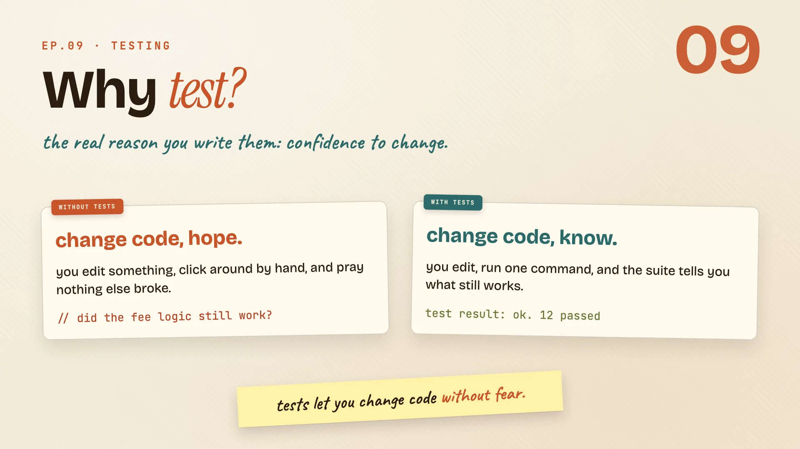
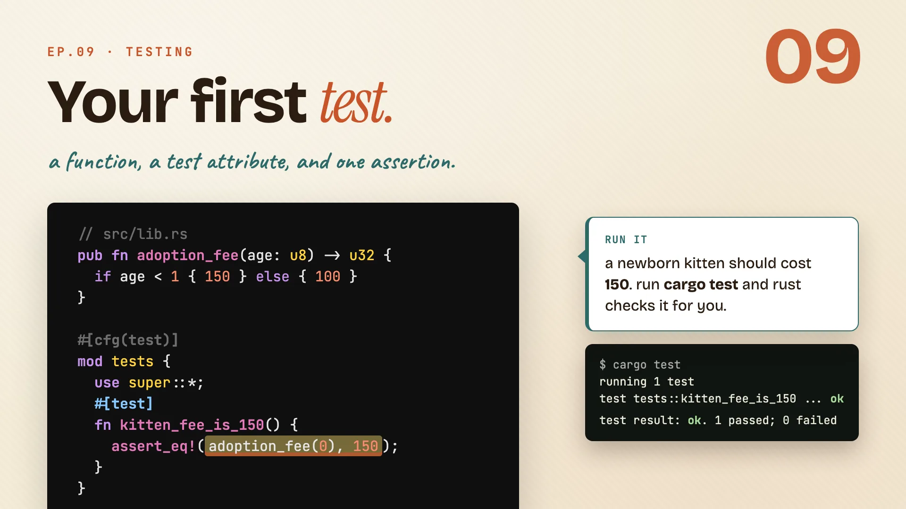
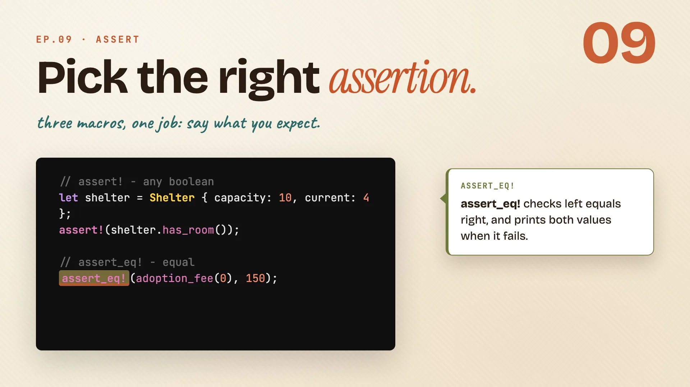
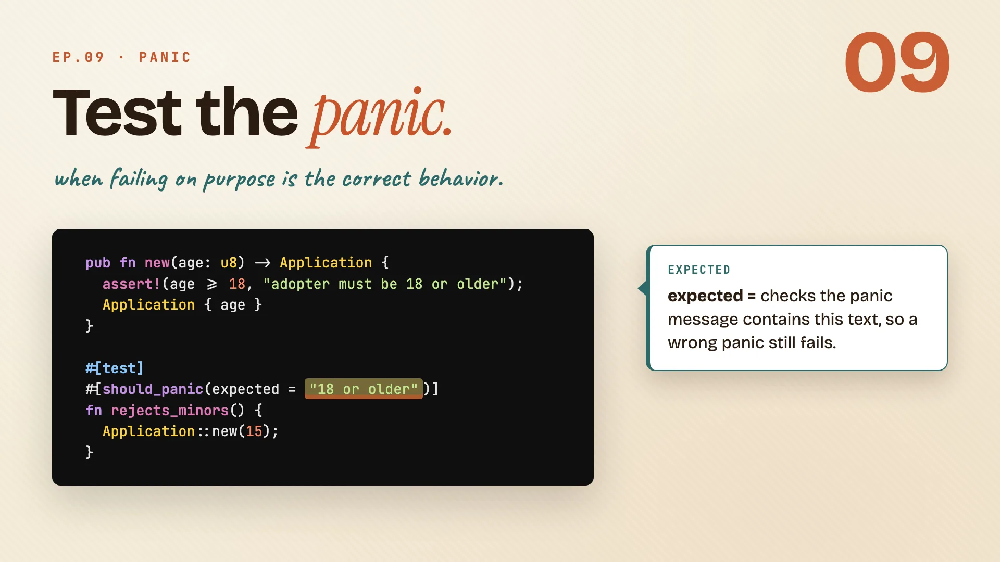
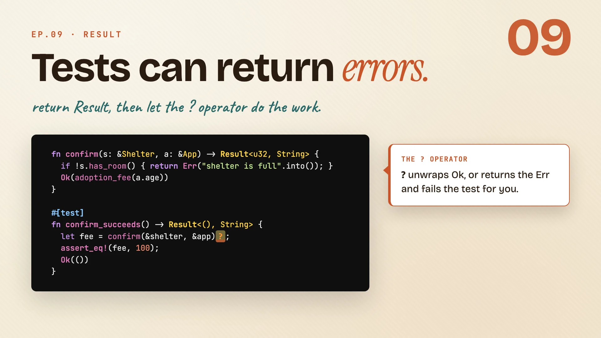
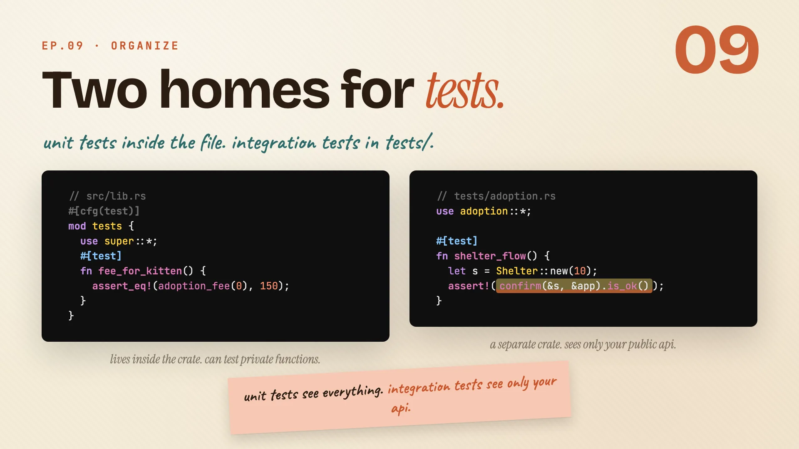
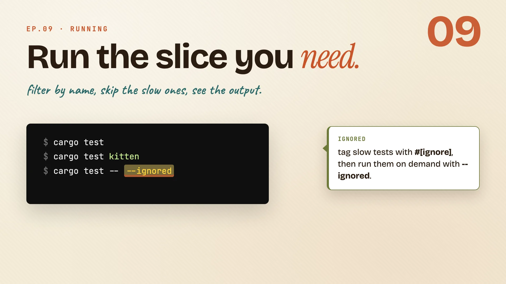
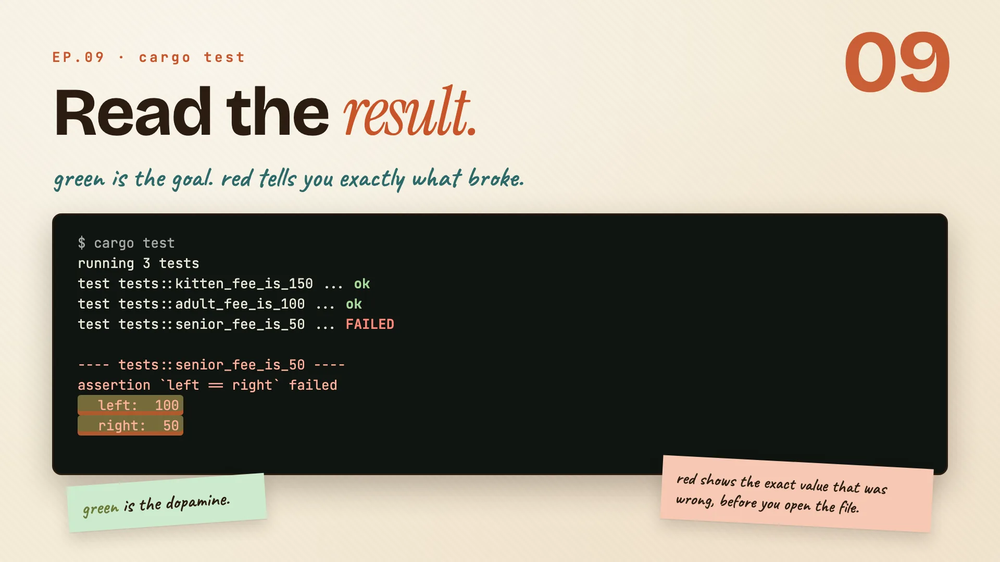

Writing Tests
the confidence to change your code without breaking it.
Writing tests
Book · §11.1Tests get a bad rap as extra homework. They're really the thing that lets you change your code and know, in one command, whether you broke anything. We start with the smallest real test.
Why test at all?
Before you write a single test, here's why they're worth it. Picture two ways of working.

Without tests, every change is a gamble. You edit some code, click around by hand to check it, and hope nothing else broke. You never quite know.
With tests, you change whatever you want, run one command, and the suite tells you exactly what still works. The hoping is gone.
| Without tests | With tests | |
|---|---|---|
| after a change | click around, hope | run one command, know |
| confidence | "I think it's fine" | "the suite says it's fine" |
| refactoring | scary | safe |
So tests aren't extra work bolted onto the real job. They're the thing that lets you change code without fear.
Remember: tests are the confidence to change code, not a chore on top of it.
Your first test
Start with the function you want to check. In the adoption crate, adoption_fee turns a kitten's age into a price.

// src/lib.rs
pub fn adoption_fee(age: u8) -> u32 {
if age < 1 { 150 } else { 100 }
}
#[cfg(test)]
mod tests {
use super::*;
#[test]
fn kitten_fee_is_150() {
assert_eq!(adoption_fee(0), 150);
}
}
Read the test part piece by piece:
#[cfg(test)] mod testsis where tests live, right next to the code. Thecfg(test)part means this module only builds when you run tests, never in your shipped binary.use super::*;pulls in everything from the file above, so the test can seeadoption_fee.#[test]marks one plain function as a test that Rust should run.assert_eq!checks that two values are equal. If they differ, the test fails and prints both.
A newborn kitten should cost 150. Run cargo test and Rust checks it for you:
$ cargo test
running 1 test
test tests::kitten_fee_is_150 ... ok
test result: ok. 1 passed; 0 failed
Green. That's the whole loop: write the function, write a #[test] next to it, assert what you expect, run.
Remember: a test is a plain function with #[test] on top, living in a cfg(test) module.
Assertions
Book · §11.1A test is only as good as the question it asks. Assertions are how you ask: this should be true, these two should be equal, these two should differ.
Pick the right assertion
There are three macros in the family, and each says a slightly different thing.

// assert! - any boolean
let shelter = Shelter { capacity: 10, current: 4 };
assert!(shelter.has_room());
// assert_eq! - equal
assert_eq!(adoption_fee(0), 150);
// assert_ne! - not equal
assert_ne!(adoption_fee(0), adoption_fee(10));
assert!passes when its expression is true. Reach for it on any boolean check, like "does the shelter have room?"assert_eq!checks that left equals right, and prints both values when it fails.assert_ne!is the mirror image. It fails only if the two are equal. A kitten fee should not match an adult fee.
| Macro | Passes when | On failure it prints |
|---|---|---|
assert!(x) |
x is true |
the line that failed |
assert_eq!(a, b) |
a == b |
both a and b |
assert_ne!(a, b) |
a != b |
both a and b |
Reach for assert_eq! by default. When it fails, the message shows you both values, so it does most of the debugging for you.
Remember: prefer assert_eq!, its failure message hands you the two values for free.
Test the panic
Sometimes the correct behavior is to panic. In the adoption crate, an adopter under eighteen should be rejected, loudly.

pub fn new(age: u8) -> Application {
assert!(age >= 18, "adopter must be 18 or older");
Application { age }
}
#[test]
#[should_panic(expected = "18 or older")]
fn rejects_minors() {
Application::new(15);
}
- The panic.
Application::newusesassert!to reject anyone under 18. It panics with a clear message. #[should_panic]flips the test around. Normally a panic means failure. With this attribute, the test passes only if the code panics.expected = "18 or older"makes it precise. The panic message has to contain this text, so a different, accidental panic still fails the test.- The call. Passing
15tonewmust panic, and that is exactly what makesrejects_minorsgo green.
Remember: #[should_panic(expected = ...)] tests that the unhappy path fails the right way.
Tests can return errors
Some functions hand back a Result. Here confirm gives you the fee on success, or an Err when the shelter is full.

fn confirm(s: &Shelter, a: &App) -> Result<u32, String> {
if !s.has_room() { return Err("shelter is full".into()); }
Ok(adoption_fee(a.age))
}
#[test]
fn confirm_succeeds() -> Result<(), String> {
let fee = confirm(&shelter, &app)?;
assert_eq!(fee, 100);
Ok(())
}
- A test can return
Resulttoo. Give it the return typeResult<(), String>. When the test returnsOk(()), it counts as passed. - Now
?earns its keep. The question mark operator unwraps anOkvalue, or returns theErrand fails the test for you. Nounwrap, no manual match. - Then assert like normal. Once you have the
fee, check it withassert_eq!exactly as before. Ok(())ends it. That final line is how aResulttest says "we made it, passed."
Remember: return Result from a test so ? can short-circuit a failure for you.
Organizing
Book · §11.3Tests don't all live in the same place, and the place changes what they can see. There are two homes: one inside the file, one in its own folder.
Two homes for tests
Unit tests live inside the file they test. Integration tests live in their own folder and use your crate from the outside, like a real user would.

// src/lib.rs
#[cfg(test)]
mod tests {
use super::*;
#[test]
fn fee_for_kitten() {
assert_eq!(adoption_fee(0), 150);
}
}
// tests/adoption.rs
use adoption::*;
#[test]
fn shelter_flow() {
let s = Shelter::new(10);
assert!(confirm(&s, &app).is_ok());
}
- Unit tests sit in a
#[cfg(test)] mod testsblock in the same file. Because they live inside the crate, they can reach private functions. - Integration tests go in
tests/adoption.rs. Theyuse adoption::*to pull your crate in from outside, so they only see your public API. That makes them the honest test of what you actually ship.
| Unit test | Integration test | |
|---|---|---|
| lives in | src/lib.rs, in mod tests |
a file under tests/ |
| sees | everything, even private | only the public API |
| feels like | testing from the inside | testing like a user |
Remember: unit tests see everything, integration tests see only your api.
Running
Book · §11.2cargo test runs the whole suite by default, but you rarely need all of it while you work. Here is how to run just the slice you care about.
Run the slice you need
By itself, cargo test runs every test in the crate. A few flags let you narrow that down.

$ cargo test
$ cargo test kitten
$ cargo test -- --ignored
$ cargo test -- --show-output
cargo teston its own runs everything.cargo test kittenruns only the tests whose names containkitten. Great while you're iterating on one thing.#[ignore]plus--ignoredis for the slow tests. Tag them with#[ignore]so they sit out normal runs, then run them on demand withcargo test -- --ignored.--show-outputbrings back the noise. Passing tests stay quiet by default. This flag prints theirprintln!lines too, when you want to see them.
| Command | Runs |
|---|---|
cargo test |
every test |
cargo test kitten |
tests with kitten in the name |
cargo test -- --ignored |
only the #[ignore]-tagged ones |
cargo test -- --show-output |
all, and prints their output |
Remember: run the slice you need, not the whole suite every time.
Read the result
Here is what a run looks like: one line per test, then a tidy summary at the bottom.

$ cargo test
running 3 tests
test tests::kitten_fee_is_150 ... ok
test tests::adult_fee_is_100 ... ok
test tests::senior_fee_is_50 ... FAILED
---- tests::senior_fee_is_50 ----
assertion `left == right` failed
left: 100
right: 50
test result: FAILED. 2 passed; 1 failed
- Green
okmeans passed. That little hit of green is the whole point of writing them. - Red
FAILEDmeans one broke, andassert_eq!doesn't just say so. It shows you the exact values:leftwas100,rightwas50. The senior fee should have been50, so the function returned the wrong number. - The summary line wraps it up:
2 passed; 1 failed.
You know what broke, and what the wrong value was, before you even open the file.
Remember: red shows the exact left and right values, so you debug before you open the code.
The whole episode in one line:
Tests are not extra. They are the project. Write them, and you get to change your code and prove it still works, every time.
Cheatsheet recap
One line per idea, in order. Skim this when you just need the reminder.
| Idea | Remember |
|---|---|
| Why test at all? | tests are the confidence to change code, not a chore on top of it. |
| Your first test | a test is a plain function with #[test] on top, living in a cfg(test) module. |
| Pick the right assertion | prefer assert_eq!, its failure message hands you the two values for free. |
| Test the panic | #[should_panic(expected = ...)] tests that the unhappy path fails the right way. |
| Tests can return errors | return Result from a test so ? can short-circuit a failure for you. |
| Two homes for tests | unit tests see everything, integration tests see only your api. |
| Run the slice you need | run the slice you need, not the whole suite every time. |
| Read the result | red shows the exact left and right values, so you debug before you open the code. |
Practice: Rustlings
17_tests.